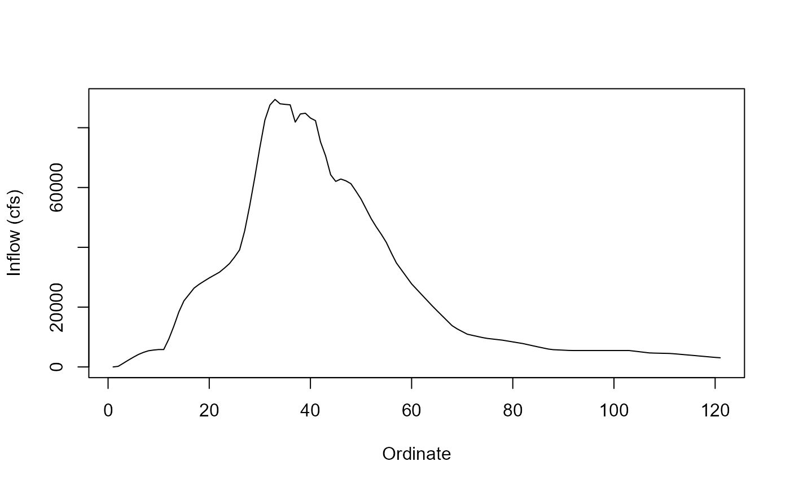

Inflow hydrograph shape from May 1955 flood event.
Format
A data frame with 241 rows and 2 columns:
- Ordinate
Timeseries Ordinate
- Date
Date mm/dd/yyyy
- Time
Time in 00:00
- Flow
Inflow (cfs)
Examples
head(jmd_hydro_may1955)
#> Ordinate Date Time Flow
#> 1 1 5/19/1955 0:00 0
#> 2 2 5/19/1955 1:00 203
#> 3 3 5/19/1955 2:00 1221
#> 4 4 5/19/1955 3:00 2263
#> 5 5 5/19/1955 4:00 3250
#> 6 6 5/19/1955 5:00 4168
# \donttest{
plot(jmd_hydro_may1955$Ordinate, jmd_hydro_may1955$Flow,
xlab = "Ordinate", ylab = "Inflow (cfs)",
type = "l")

# }